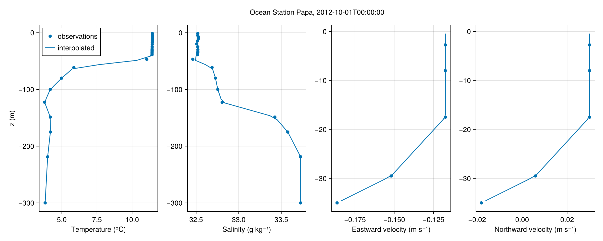
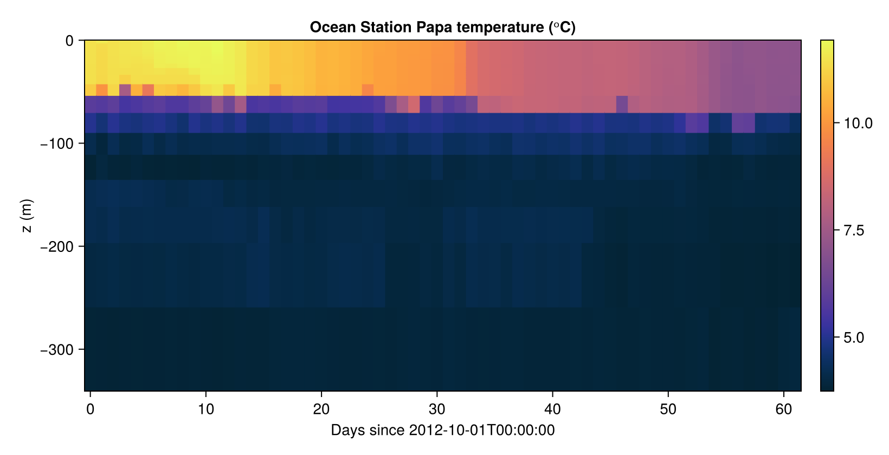
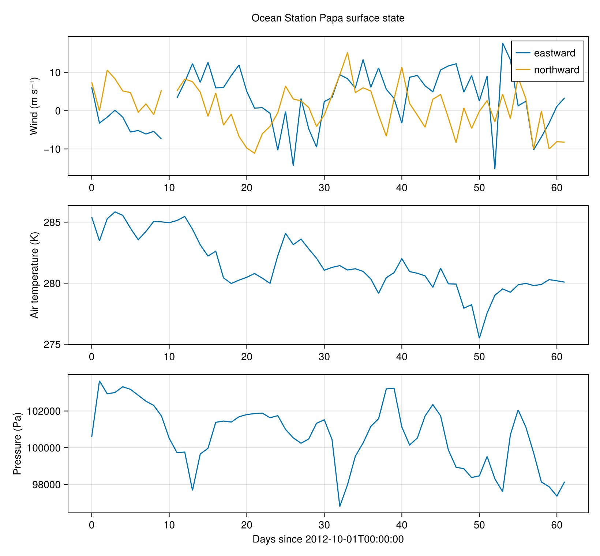

Implementing a new dataset
NumericalEarth ships connectors for a number of global data products (ECCO, GLORYS, EN4, JRA55, ERA5, ...), all built on the same Metadata interface. That interface is public: a dataset you maintain yourself can plug into the very same machinery (set!, Field, FieldTimeSeries) by extending a handful of methods in your own script, without modifying the package.
This tutorial works through a deliberately small example: the Ocean Station Papa mooring (50.1ᵒN, 144.9ᵒW), a single water column of hourly temperature and salinity profiles. Because it is a single point rather than a global grid, it is a good fit for NumericalEarth's Column region.
The interface
To describe a dataset we extend, at most, the following methods from NumericalEarth.DataWrangling:
| method | what it returns |
|---|---|
default_download_directory | where files are cached |
Downloads.download | how to fetch the file(s) |
metadata_filename | the on-disk filename for a (variable, date) |
dataset_variable_name | the variable's name inside the file |
longitude_name / latitude_name | the file's coordinate-variable names (default "longitude"/"latitude") |
all_dates | the time axis |
averaging_window | (optional) the interval a value represents (default: the stamp itself) |
Base.size | the (Nx, Ny, Nz) shape of one snapshot |
is_three_dimensional | whether a variable has a vertical axis (default true) |
z_interfaces | the vertical cell faces (3-D variables) |
conversion_units | (optional) conversion to the model's units (default: none) |
retrieve_data | read one snapshot from disk |
default_region | (optional) a region baked into every Metadata for this dataset |
Everything else — building the column grid, reducing the horizontal location, vertical interpolation onto the target grid — is supplied by the generic path.
Dates and averaging windows
all_dates returns the dates the files carry. They build filenames and download requests and locate a record inside a file, so they stay exactly as the product labels them. What a value means in time is a separate question, answered by averaging_window: for a product whose files hold time averages it returns the interval each average is taken over, and a FieldTimeSeries then puts the sample at the middle of that interval and repeats a cyclic series over the span the intervals tile. Products label an average with the start of that interval, its end, or its middle, so the window is declared per dataset rather than inferred from the dates. The mooring records values at an instant and keeps the default, a window of zero width.
using NumericalEarth
using NumericalEarth.DataWrangling: Metadata, Metadatum, metadata_path, centers_to_interfaces,
Celsius, Millibar, MillimetersPerHour, CentimetersPerSecond
using Oceananigans
using Dates: DateTime, Day
using Downloads: Downloads
using NCDatasets: Dataset[ Info: Oceananigans will use 8 threads
Describing the dataset
A dataset is identified by a singleton type. We also alias the single-date Metadatum specialization, which retrieve_data dispatches on.
struct OceanStationPapa end
const OceanStationPapaMetadatum = Metadatum{<:OceanStationPapa}
const OceanStationPapaMetadata = Metadata{<:OceanStationPapa}NumericalEarth.DataWrangling.Metadata{<:Main.var"##277".OceanStationPapa}Ocean Station Papa packs the whole record into one NetCDF file. We expose the ocean profiles (temperature, salinity, currents) and the surface met fields (winds, air temperature, humidity, pressure, radiation, rain), each under its in-file name; the profiles additionally live on their own depth axes:
const OSPapa_url = "https://noaa-oar-keo-papa-pds.s3.amazonaws.com/PAPA/OS_PAPA_200706_M_TSVMBP_50N145W_hr.nc"
const OSPapa_filename = "OS_PAPA_200706_M_TSVMBP_50N145W_hr.nc"
const OSPapa_dataset_variable_names = Dict(
:temperature => "TEMP",
:salinity => "PSAL",
:eastward_wind => "UWND",
:northward_wind => "VWND",
:air_temperature => "AIRT",
:relative_humidity => "RELH",
:sea_level_pressure => "ATMS",
:shortwave_radiation => "SW",
:longwave_radiation => "LW",
:rain => "RAIN",
:eastward_velocity => "UCUR",
:northward_velocity => "VCUR",
)
const OSPapa_depth_variable_names = Dict(
:temperature => "DEPTH",
:salinity => "DEPPSAL",
:eastward_velocity => "DEPCUR",
:northward_velocity => "DEPCUR",
)Dict{Symbol, String} with 4 entries:
:temperature => "DEPTH"
:eastward_velocity => "DEPCUR"
:northward_velocity => "DEPCUR"
:salinity => "DEPPSAL"Caching, the filename, and the in-file variable name are one-liners. The coordinate variables in this file are uppercase (LONGITUDE/LATITUDE), so we point the readers at them. Crucially, the buoy lives at one fixed location, so we embed its Column via default_region — every Metadata for this dataset then carries it automatically and callers never repeat the coordinates:
NumericalEarth.DataWrangling.default_download_directory(::OceanStationPapa) = mkpath(joinpath(tempdir(), "OceanStationPapa"))
NumericalEarth.DataWrangling.metadata_filename(::OceanStationPapa, name, date, region) = OSPapa_filename
NumericalEarth.DataWrangling.dataset_variable_name(md::OceanStationPapaMetadata) = OSPapa_dataset_variable_names[md.name]
NumericalEarth.DataWrangling.longitude_name(::OceanStationPapaMetadata) = "LONGITUDE"
NumericalEarth.DataWrangling.latitude_name(::OceanStationPapaMetadata) = "LATITUDE"
NumericalEarth.DataWrangling.default_region(::OceanStationPapa) = Column(-144.9, 50.1)A variable is three-dimensional exactly when it has a depth axis; the surface met fields are single-level. Most variables already arrive in the model's units; the few that do not are converted on read.
NumericalEarth.DataWrangling.is_three_dimensional(md::OceanStationPapaMetadata) = haskey(OSPapa_depth_variable_names, md.name)
function NumericalEarth.DataWrangling.conversion_units(md::OceanStationPapaMetadatum)
md.name == :air_temperature && return Celsius()
md.name == :sea_level_pressure && return Millibar()
md.name == :rain && return MillimetersPerHour()
md.name in (:eastward_velocity, :northward_velocity) && return CentimetersPerSecond()
return nothing
end
function download_ospapa(dir = NumericalEarth.DataWrangling.default_download_directory(OceanStationPapa()))
path = joinpath(dir, OSPapa_filename)
isfile(path) || Downloads.download(OSPapa_url, path)
return path
end
Downloads.download(md::OceanStationPapaMetadata) = download_ospapa(md.dir)The dates and depths live inside the file, so we read them straight from it. (We can avoid building a Metadatum here)
function read_coordinate(variable)
ds = Dataset(download_ospapa())
data = Array(ds[variable][:])
close(ds)
return data
end
NumericalEarth.DataWrangling.all_dates(::OceanStationPapa, name) = DateTime.(read_coordinate("TIME"))
ospapa_depths(name) = Float64.(read_coordinate(OSPapa_depth_variable_names[name]))
Base.size(::OceanStationPapa, name) = haskey(OSPapa_depth_variable_names, name) ? (1, 1, length(ospapa_depths(name))) : (1, 1, 1)z_interfaces turns the measurement depths (positive-down in the file) into ascending cell faces via the centers_to_interfaces helper:
NumericalEarth.DataWrangling.z_interfaces(md::OceanStationPapaMetadata) = centers_to_interfaces(sort(- ospapa_depths(md.name)))Finally, retrieve_data reads one profile. The file stores the variable as (longitude, latitude, depth, time), shallow-to-deep, so we select the requested time and flip the column to match the grid's bottom-up z-axis:
function NumericalEarth.DataWrangling.retrieve_data(md::OceanStationPapaMetadatum)
ds = Dataset(metadata_path(md))
t = findfirst(==(md.dates), DateTime.(ds["TIME"][:]))
raw = ds[NumericalEarth.DataWrangling.dataset_variable_name(md)][:, :, :, t]
close(ds)
return reverse(Float64.(replace(raw, missing => NaN)), dims = 3)
endThat is the entire dataset — no custom grid, no custom set!, no vertical interpolation. The embedded Column drives the generic path: it builds the (Flat, Flat, Bounded) column grid, reduces the horizontal location, and bridges missing instrument depths by propagating vertically.
using CairoMakie
date = DateTime(2012, 10, 1)2012-10-01T00:00:00A single profile
Field(metadatum) returns the profile on the buoy's own measurement depths; set! interpolates that same metadatum onto any column grid we choose. We overlay the two for temperature, salinity, and the two velocity components. Each variable gets a target grid spanning its own measured depth: the currents reach only the upper tens of meters, while temperature and salinity extend to ~300 m.
fig = Figure(size = (1200, 480))
axT = Axis(fig[1, 1], xlabel = "Temperature (ᵒC)", ylabel = "z (m)")
axS = Axis(fig[1, 2], xlabel = "Salinity (g kg⁻¹)")
axu = Axis(fig[1, 3], xlabel = "Eastward velocity (m s⁻¹)")
axv = Axis(fig[1, 4], xlabel = "Northward velocity (m s⁻¹)")
for (ax, name) in ((axT, :temperature), (axS, :salinity), (axu, :eastward_velocity), (axv, :northward_velocity))
metadatum = Metadatum(name; dataset = OceanStationPapa(), date)
observations = Field(metadatum)
scatter!(ax, interior(observations, 1, 1, :), znodes(observations), label = "observations")
bottom = minimum(znodes(observations))
grid = RectilinearGrid(size = 40, x = -144.9, y = 50.1, z = (bottom, 0), topology = (Flat, Flat, Bounded))
interpolated = CenterField(grid)
set!(interpolated, metadatum)
lines!(ax, interior(interpolated, 1, 1, :), znodes(interpolated), label = "interpolated")
end
axislegend(axT, position = :lt)
Label(fig[0, 1:4], "Ocean Station Papa, $(date)", tellwidth = false)
save("ospapa_profiles.png", fig)
A time series
Passing a dates range instead of a single date makes a Metadata spanning a time axis, which materializes as a FieldTimeSeries. Keeping every snapshot in memory lets us draw the whole record at once as a Hovmöller diagram (depth versus time):
using Oceananigans.Units: days
dates = DateTime(2012, 10, 1):Day(1):DateTime(2012, 12, 1)
temperature = Metadata(:temperature; dataset = OceanStationPapa(), dates)
Tt = FieldTimeSeries(temperature; time_indices_in_memory = length(dates))
t = Tt.times ./ days
z = znodes(Tt)
hovmoller = Array(interior(Tt, 1, 1, :, :))
fig = Figure(size = (820, 420))
ax = Axis(fig[1, 1]; xlabel = "Days since $(first(dates))", ylabel = "z (m)",
title = "Ocean Station Papa temperature (ᵒC)")
hm = heatmap!(ax, t, z, permutedims(hovmoller); colormap = :thermal)
Colorbar(fig[1, 2], hm)
save("ospapa_hovmoller.png", fig)
Surface fields
The surface met variables are single-level, so each materializes as a (1, 1, 1, Nt) FieldTimeSeries — a plain scalar time series. We pull a few over the same window and read them through interior; this is exactly the raw material a PrescribedAtmosphere would ingest to force an ocean column. The unit conversions are visible in the results: air temperature returns in K and pressure in Pa, while the winds (already m s⁻¹) pass through untouched.
function surface_series(name)
metadata = Metadata(name; dataset = OceanStationPapa(), dates)
fts = FieldTimeSeries(metadata; time_indices_in_memory = length(dates))
return interior(fts, 1, 1, 1, :)
end
ua = surface_series(:eastward_wind)
va = surface_series(:northward_wind)
Ta = surface_series(:air_temperature)
pa = surface_series(:sea_level_pressure)
fig = Figure(size = (820, 760))
axu = Axis(fig[1, 1]; ylabel = "Wind (m s⁻¹)")
axT = Axis(fig[2, 1]; ylabel = "Air temperature (K)")
axp = Axis(fig[3, 1]; xlabel = "Days since $(first(dates))", ylabel = "Pressure (Pa)")
lines!(axu, t, ua, label = "eastward")
lines!(axu, t, va, label = "northward")
axislegend(axu)
lines!(axT, t, Ta)
lines!(axp, t, pa)
Label(fig[0, 1], "Ocean Station Papa surface state", tellwidth = false)
save("ospapa_surface.png", fig)
Summary
By extending the Metadata interface, a station dataset that NumericalEarth does not ship becomes a first-class citizen: the same Metadatum / Metadata / set! / Field / FieldTimeSeries API used for global products now drives it too — and a Metadatum can be handed straight to set!(ocean.model, T = ...) to initialize a single-column simulation from observations.
This page was generated using Literate.jl.